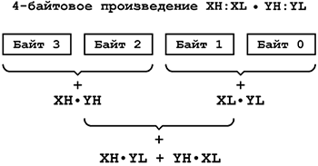
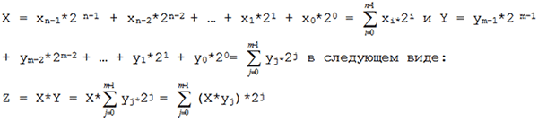
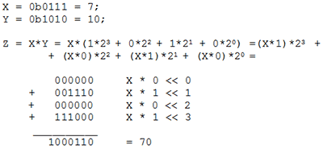
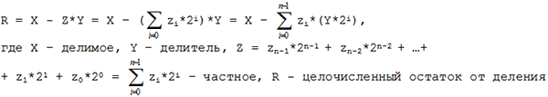
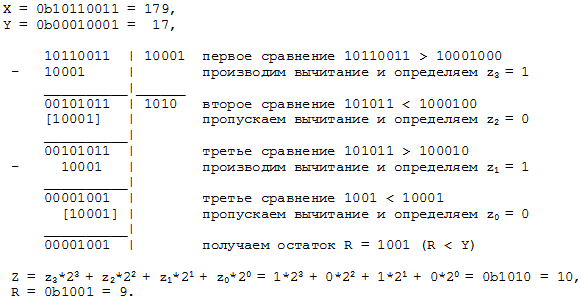

Беззнаковые целые числа
Эта глава главным образом будет посвящена арифметическим операциям над большими беззнаковыми целыми числами (подробней о различных форматах чисел смотри в приложении Б). В приложениях на AVR-микроконтроллерах наиболее часто приходится использовать 16-разрядные вычисления, которые достаточно легко программируются. Двухбайтовые числа предоставляют достаточно широкий диапазон представления переменных. Однако, встречаются задачи в которых необходимо применение чисел и с большей разрядностью (счётчики импульсов, накопители суммы, промежуточные результаты вычислений и т.д.).
Сложение
Реализовать многобайтовое сложение очень просто. Для этого имеется специальная команда adc Rd,Rr, которая складывает содержимое двух регистров и добавляет к полученной сумме бит переноса C из регистре SREG (Rd <- Rd+Rr+С). Этот бит устанавливается всегда, когда в результате предыдущей операции сложения возникает переполнение (т.е. бит C всегда является 9-ым битом результата операции сложения). Так может выглядеть сложение двух 16-разрядных чисел R17:R16 и R19:R18 (сумма размещается на месте второго слагаемого R19:R18):
|
1 2 |
add R18,R16 ;R18 <- R18 + R16 adc R19,R17 ;R19 <- R19 + R17 + C |
Необходимо помнить, что в результате сложения двух n-разрядных чисел возможно образование n+1-разрядной суммы. Например, в результате следующей операции сложения получим:
0xB2FF + 0xCC45 = 0x17F44 = 0x10000 + 0x7F44.
Сумма двухбайтовых слагаемых превысила максимальное 16-разрядное значение 0xFFFF = 65535 и вместо 0x17F44 = 98116 мы получили 0x7F44 = 32580. При этом должен установиться флаг C (17-тый разряд суммы), как признак того, что произошел перенос в старший разряд и к полученному результату необходимо добавить 0x10000 = 65536.
В регистре SREG имеется еще один бит непосредственно связанный с действием сложения. Это флаг половинного переноса H, который может использоваться в 4-разрядных вычислениях. Он носит тот же смысл, что и флаг C, но указывает на переполнение суммы младших полубайтов (т.е. перенос из третьего в четвертый разряды числа). Флаг H почти никогда не используется на практике.
Если для хранения результата вычисления не хватает РОНов, то сложение рационально производить с помощью косвенной адресации, а результат размещать в SRAM процессора. В этом случае разрядность слагаемых и вычисленной суммы будет ограничена только свободным местом в памяти данных.
Подпрограмма такого сложения:
|
1 2 3 4 5 6 7 8 9 10 11 12 13 14 15 16 17 18 19 20 21 22 23 24 25 |
; [YH:YL] = [YH:YL] + [XH:XL] ; [YH:YL] – первое слагаемое при входе и сумма при ; выходе (косвенно адресуется через YH:YL) ; [XH:XL] – второе слагаемое (косвенно адресуется через XH:XL) ; R16,R17,R18 – вспомогательные регистры ; composed1 – адрес 1-го слагаемого и ; полученной суммы в ОЗУ ; composed 2 – адрес 2-го слагаемого в ОЗУ ; SIZE – размер слагаемых в байтах ; на выходе в C находится старший разряд результата
add_indirect: ldi YH,high(composed1) ;заносим в указатель Y адрес ldi YL,low(composed1) ;первого слагаемого composed1 ldi XH,high(composed2) ;заносим в указатель Y адрес ldi XL,low(composed2) ;второго слагаемого composed2 ldi R16,SIZE clc ;при первом входе в цикл C=0 ad1: ld R17,X+ ld R18,Y ;поочерёдно складываем с учётом переноса adc R18,R17 ;все байты слагаемых и заносим результат st Y+,R18 ;по адресу первого слагаемого dec R16 brne ad1 ;повторяем сложение SIZE раз ret |
Вычитание
Подобно сложению с переносом в архитектуре AVR существует и команда вычитания с заемом sbc Rd,Rr. Для связи байтов в ней тоже участвует флаг C, который в этом случае обычно называется флагом заема. Бит C устанавливается каждый раз, когда результат предыдущей операции вычитания оказывается меньше нуля и автоматически вычитается из разности полученной после команды sbc Rd,Rr (Rd <- Rd-Rr-С). Ниже показан пример вычитания 16-разрядного числа R17:R16 из R19:R18 (разность помещается на место вычитаемого):
|
1 2 |
sub R18,R16 ;R18 <- R18 - R16 sbc R19,R17 ;R19 <- R19 - R17 - C |
Разрядность разности при вычитании никогда не превысит разрядности делимого. Однако здесь возникает другая проблема, связанная с тем, что уменьшаемое может оказаться меньше вычитаемого. В результате такого действия мы получим установленный флаг C, как признак отрицательного результата. И хотя с точки зрения арифметики такая операция является вполне законной - она приводит к отрицательным числам, представленным в дополнительном коде, которые будут рассмотрены в следующем разделе.
Ниже приведена подпрограмма вычитания двух многобайтовых чисел, размещенных в SRAM.
|
1 2 3 4 5 6 7 8 9 10 11 12 13 14 15 16 17 18 19 20 21 22 23 24 25 |
; [YH:YL] = [YH:YL] - [XH:XL] ; [YH:YL] – уменьшаемое при входе и разность при ; выходе (косвенно адресуется через YH:YL) ; [XH:XL] – вычитаемое (косвенно адресуется через XH:XL) ; R16,R17,R18 – вспомогательные регистры ; reduced - адрес уменьшаемого и ; полученной разности в ОЗУ ; subtracted - адрес вычитаемого в ОЗУ ; SIZE – размер уменьшаемого и вычитаемого в байтах ; на выходе бит C=1 если [YH:YL] < [XH:XL]
sub_indirect: ldi YH, high(reduced) ;заносим в указатель Y адрес ldi YL, low(reduced) ;уменьшаемого reduced ldi XH, high(subtracted) ;заносим в указатель X адрес ldi XL, low(subtracted) ;вычитаемого subtracted ldi R16,SIZE clc ;при первом входе в цикл C=0 sb1: ld R17,X+ ld R18,Y ;поочерёдно вычитаем с учётом заёма из sbc R18,R17 ;уменьшаемого все байты вычитаемого и st Y+,R17 ;заносим результат по адресу уменьшаемого dec R16 brne sb1 ;повторяем вычитание SIZE раз ret |
Умножение
У микроконтроллеров AVR, по сути, имеется два пути реализации умножения, разница между которыми заключается в форме представления произведения и, соответственно, в различии выполняемых арифметических операций. Первый оптимизирован для использования с командой однобайтового умножения, второй – использует только сложение и сдвиговые операции. Для произведения n-разрядного множимого и m-разрядного множителя необходимо отводить n+m разрядов.
Помимо этого существует особый случай умножения на целую степень 2. Всё дело в том, что 2 является основанием двоичной системы, а в любой позиционной системе операция умножения числа на основание системы приводит к увеличению веса каждого его разряда на порядок:
2*X = 2*(xn-1*2n-1 + xn-2*2n-2 + … + x1*21 + x0*20) = xn-1*2n + xn-2*2n-1 + … + x1*22 + x0*21.
Как видно, коэффициенты xn числа X переместились на один разряд влево (x0 стал при 21, x1 стал при 22 и т.д.). Итак, для умножения двоичного числа на 2n необходимо просто сдвинуть его на n разрядов влево. Так можно осуществить умножение на 2 двухбайтового числа в регистрах R17:R16 посредством сдвиговых операций:
|
1 2 |
lsl R16 ;R16 <- R16 << 1 (LSB <- 0, флаг С <- MSB) rol R17 ;R17 <- R17 << 1 (LSB <- флаг С, флаг С <- MSB) |
Тот же результат можно получить, складывая число с самим собой:
|
1 2 |
add R16, R16 adc R17, R17 |
Благодаря тому, что операции сдвига и сложения выполняются за одинаковое время (1 машинный цикл) оба примера равноценны.
Иногда встречаются операции умножения на число, которое близко к степени 2. В таких случаях намного проще заменить его суммой двух слагаемых, одно из которых кратно 2n, и использовать только операции сдвига и сложения (вычитания):
63*X = (26-1)*X = 26*X - X = X<<6 – X,
33*X = (25+1)*X = 25*X + X = X<<5 + X,
130*X = (27+2)*X = 27*X + 2*X = X<<7 + X<<2.
Для умножения 2-байтовых чисел (обозначим их как XH:XL = 28*XH + XL и YH:YL = 28*YH + YL) применяется следующая вычислительная схема:
XH:XL * YH:YL = (28*XH + XL)*(28*YH + YL) = 216*XH*YH + 28*(XH*YL + YH*XL) + XL*YL.

Рис.1 Вычислительная схема для умножения двухбайтовых чисел с использованием инструкции умножения
Отыскание 32-разрядного результата сводится к последовательности операций однобайтовых умножений и последующего сложения всех произведений с учётом сдвига слагаемых XH*YL, XL*YH на 1 байт и XH*YH на 2 байта, как показано на рис.1. Подпрограмма, реализующая эти действия, приведена ниже. Напомним, что произведение двух однобайтовых множителей, полученное в результате выполнения команды mul Rd,Rr или любой другой команды умножения, всегда заносится в регистровую пару R1:R0.
|
1 2 3 4 5 6 7 8 9 10 11 12 13 14 15 16 17 18 19 20 21 |
; R23:R22:R21:R20 = R17:R16 * R19:R18 ; R23:R22:R21:R20 - произведение ; R17:R16 – множимое ; R19:R18 – множитель ; R1,R0 – вспомогательные регистры
mul16_16: mul R16,R18 ;находим XL*YL = R16*R18 и заносим его в movw R20,R0 ;младшие байты произведения R21:R20 mul R17,R19 ;находим XH*YH = R17*R19 и заносим его в movw R22,R0 ;старшие байты произведения R23:R22 mul R17,R18 ;находим XH*YL = R17*R18 и прибавляем его к clr R17 ;байтам R23:R22:R21 произведения add R21,R0 adc R22,R1 adc R23,R17 mul R16,R19 ;находим YH*XL = R19*R16 и прибавляем его к add R21,R0 ;байтам R23:R22:R21 произведения adc R22,R1 adc R23,R17 ret |
Возвести двухбайтовое число в квадрат еще проще:
XH:XL * XH:XL = (28*XH + XL)*(28*XH + XL) = 216*XH*XH + 28*2*XH*XL + XL*XL.
Подпрограмма возведения в квадрат приведена ниже. Она является хорошим примером того, где может пригодиться инструкция fmul Rd,Rr, которая одним действием производит умножение двух однобайтовых чисел и сдвиг произведения на 1 разряд влево.
|
1 2 3 4 5 6 7 8 9 10 11 12 13 14 15 16 17 |
; R21:R20:R19:R18 = R17:R16 * R17:R16 ; R17:R16 – число, возводимое в квадрат ; R21:R20:R19:R18 – произведение ; R1,R0 – вспомогательные регистры
sqr16_16: mul R16,R16 ;находим XL*XL = R16*R16 и заносим его в movw R18,R0 ;младшие байты произведения R19:R18 mul R17,R17 ;находим XH*XH = R17*R17 и заносим его в movw R20,R0 ;старшие байты произведения R21:R20 fmul R17,R16 ;находим 2*XH*YL = R17*R18 и прибавляем его clr R17 ;к байтам R21:R20:R19 произведения rol R17 add R19,R0 adc R20,R1 adc R21,R17 ret |
Во многих случаях команда fmul Rd,Rr позволяет использовать аппаратный умножитель 8x8 фактически как умножитель 9x8 с получением 17-разрядного результата (MSB произведения размещается в C). Это бывает очень полезно, когда возникает необходимость умножить переменную на постоянный числовой коэффициент, который немного выходит за пределы 8-разрядной сетки. Так, допустим, можно умножить число из R16 на 500
|
1 2 |
ldi R17,250 ;R1:R0 <- (250<<1)*R16 = 500*R16 fmul R17,R16 ; флаг С <- MSB |
или на 1000:
|
1 2 3 4 |
ldi R17,250 ;R1:R0 <- (250<<2)*R16 = 1000*R16 fmul R17,R16 ;флаг С <- MSB lsl R0 rol R1 |
Ниже показан другой практически важный пример умножения, когда один из множителей (множитель X) однобайтовый. В основе подпрограммы лежит следующая вычислительная схема:
X * YH:YL = X*(28*YH + YL) = 28*X*YH + X*YL
|
1 2 3 4 5 6 7 8 9 10 11 12 13 14 15 |
; R21:R20:R19 = R18 * R17:R16 ; R21:R20:R19 - произведение ; R18 – множимое ; R17:R16 – множитель ; R1,R0 – вспомогательные регистры
mul8_16: mul R18,R17 ;находим X*YH = R18*R17 и заносим его в movw R20,R0 ;старшие байты произведения R21:R20 mul R18,R16 ;находим X*YL = R18*R16 clr R18 add R19,R0 ;и прибавляем его add R20,R1 ;к произведению R21:R20:R19 adc R21,R18 ret |
Точно также могут быть разложены числа и с большей разрядностью. Однако с ростом их величины начинают резко возрастать и затраты ресурсов процессора. Так для умножения трёхбайтовых чисел понадобится по 9 операций однобайтовых умножений и двухбайтовых сложений; для четырёхбайтовых уже по 16 операций и т.д.
В подобных случаях необходимо использовать другой, наиболее общий алгоритм, который не использует команду mul Rd,Rr. А для микроконтроллеров семейства ATtiny, (а также для устаревшей линейки моделей Classic), у которых отсутствует аппаратный умножитель, он вообще является единственно возможным.
Для пояснения алгоритма, перепишем произведение Z двух произвольных двоичных чисел

Произведение X*yj называется частичным произведением (X*yj = X при yj =1 и X*yj = 0 при yj =0), а произведение (X*yj)*2j есть не что иное, как частичное произведение, сдвинутое на j разрядов влево. Итак, нахождение произведение X*Y сводится к нахождению суммы частичных произведений X*yj, каждое из которых в свою очередь сдвинуто на j разрядов влево соответственно. На этом принципе основан школьный метод умножения в столбик. Рассмотрим пример умножения двух 4-разрядных чисел:

Как видим, для получения результата используются только операции сложения и сдвига. При этом в тех разрядах Y, где yj=0 и X*yj=0. И если предварительно анализировать значения yj/, то можно пропускать пустое сложение с 0 в соответствующих итерациях. Ниже приведена подпрограмма умножения двух трёхбайтовых чисел. В ней для получения суммы частичных произведений, сдвинутых каждое на j разрядов влево, производится сдвиг накопителя произведений m=24 раза вправо, а для экономии памяти младшие 3 байта произведения заносятся в те же регистры, где находился множитель.
|
1 2 3 4 5 6 7 8 9 10 11 12 13 14 15 16 17 18 19 20 21 22 23 24 25 26 27 |
; R24:R23:R22:R21:R20:R19 = R18:R17:R16 * R21:R20:R19 ; R24:R23:R22:R21:R20:R19 – произведение ; R18:R17:R16 – множимое ; R21:R20:R19 – множитель ; R25,R1,R0 – вспомогательный регистр
mul24_24: clr R22 ;очищаем регистры R22,R23,R24 clr R23 ;при входе в подпрограмму clr R24 ldi R25,24 ;инициализируем счётчик циклов сложения clc ;сдвинутых частичных произведений ml1: sbrs R19,0 ;если младший бит множителя 1, то rjmp ml2 add R22,R16 ;добавляем к накопителю очередное adc R23,R17 ;частичное произведение R18:R17:R16 adc R24,R18 ml2: ror R24 ;байтам R24:R23:R22 накопителя произведения ror R23 ;в ином случае пропускаем это действие ror R22 ;и переходим к очередному сдвигу множителя ror R21 ror R20 ror R19 clc dec R25 ;повторяем m=24 раз цикл сложения brne ml1 ;сдвинутых частичных произведений ret |
Деление
Из всех арифметических операций деление занимает особое место. По отношению к умножению деление является обратной операцией и не имеет конечной формулы для определения частного. Деление – единственная арифметическая операция ограниченной точности! Не смотря на это алгоритмы деления достаточно просты. Ниже будут показаны два таких алгоритма, которые используют только операции вычитания и сдвигов. Для того чтобы получить результат в виде целочисленных частного и остатка нужно предварительно убедиться в том, чтобы делимое было больше делителя и, конечно, исключить возникновение запрещённой операции деления на 0. При делении n-разрядного делимого на m-разрядный делитель под частное необходимо отвести n, а под остаток m разрядов.
Частным случаем является деление на целую степень 2:
X/2 = (x-1*2n-1 + xn-2*2n-2 + … + x1*21 + x0*20 )/2 = xn-1*2n-1 + xn-2*2n-2 + … + x1*20 + x0*1/21
Все коэффициенты xn двоичного числа X переместились на один разряд вправо (x0 стал при 1/21, x1 стал при 20 и т.д.). Таким образом для деления двоичного числа на 2n необходимо произвести сдвиг его содержимого на n разрядов в правую сторону. Так выглядит деление на 2 16-разрядного числа в регистрах R17:R16:
|
1 2 |
lsr R17 ; R17 <- R17 >> 1 (MSB <- 0, флаг С <- LSB) ror R16 ; R16 <- R16 >> 1 (MSB <- С, флаг С <- LSB) |
Обратите внимание на то, что после сдвига вправо во флаге переноса С окажется целочисленный остаток (младший коэффициент x0) от деления на 2.
Для другого частного случая деления на 3 существует один очень интересный алгоритм, основанный на разложении дроби X/3 в ряд вида:
X/3 = X/2 - X/4 + X/8 - X/16 + X/32 - …
Каждый член ряда получается делением X на целую степень 2, что как было показано выше, легко реализуется сдвиговыми операциями. Ниже приведена подпрограмма деления на 3 16-разрядного числа.
|
1 2 3 4 5 6 7 8 9 10 11 12 13 14 15 16 17 18 19 20 21 22 23 24 25 26 |
; R19:R18 = R17:R16/3 ; R19:R18 – частное ; R17:R16 – делимое ; R20 – вспомогательный регистр
div16to3: clr R18 ;очищаем вспомогательные регистры R18,R19 clr R19 ;при входе в подпрограмму du1: rcall shft_right brne PC+2 ;если Z=1, ret ;то завершаем деление add R18,R16 ;в ином случае добавляем к накопителю adc R19,R17 ;очередной нечётный член ряда rcall shift_right brne PC+2 ;если Z=1, ret ;то завершаем деление sub R18,R16 ;в ином случае вычитаем из накопителя sbc R19,R17 ;очередной чётный член ряда rjmp du1
shft_right: lsr R17 ;производим деление R17:R16 / 2, ror R16 ;получая очередной член ряда mov R20,R17 ;если R20 = R17+R16 = 0 (т.е. R17:R16=0), or R20,R16 ;то выходим из подпрограммы с флагом Z=1 ret |
Этот пример очень эффективен. Его быстродействие ограничено только разрядностью делимого. Более того для делимого произвольной величины обрабатывается оптимальное число членов ряда (до 16), а результат автоматически округляется до ближайшего целого числа.
Естественно, что в тех случаях, когда необходимо разделить число на 6 можно совместно использовать приемы деления на 2 и 3:
X/6 = (X/2)/3 = (X >> 1)/3 = (X/3) >> 1
Для уменьшения погрешности деление чётных чисел следует начинать с деления на 2 (остаток 0) а, деление нечётных с деления на 3 (алгоритм этого вида деления учитывает остаток).
В общем случае самый естественный и простой способ разделить одно число на другое – это решить уравнение, вытекающее непосредственно из определения операции деления:
X = Z*Y + R,
R < Y, Y ≠ 0,
где X – делимое, Y – делитель, Z – частное, R – целочисленный остаток от деления.
Уравнение содержит два неизвестных параметра Z и R и поэтому не может быть явно разрешено. Для отыскания результата необходимо прибегнуть к итерационному методу: вычитать из делимого делитель до тех пор, пока остаток не окажется меньше делителя. Тогда число циклов вычитания численно даст частное Z, а остаток будет равен целочисленному остатку R от деления. Для примера, произведем следующее деление:
X = 213, Y = 10,
X - Z*Y = R, 213 – 21*10 = 3,
Z = 21, R = 3.
Мы 21 раз смогли вычесть из 213 по 10 пока не образовался остаток 3<10. Приведённый алгоритм имеет существенный недостаток – скорость его выполнения напрямую зависит от величины частного (числа итераций вычитания), что делает нежелательным его использование для деления больших чисел. Применяется он, в основном, в задачах ограниченных делением однобайтовых величин. Подпрограмма деления:
|
1 2 3 4 5 6 7 8 9 10 11 12 13 |
; [R18] + {R17} = R17 / R16 ; R18 – частное ; R17 – делимое при входе и целочисленный остаток на выходе ; R16 – делитель
div8_8: clr R18 ;очищаем R18 при входе sub R17,R16 ;производим вычитание R17-R16 inc R18 brcc PC-2 ;до тех пор пока разность R17-R16 > 0 dec R18 ;когда разность R17-R16 < 0 add R17,R16 ;восстанавливаем R17 и корректируем R18 ret |
Для чисел большей разрядности необходимо использовать способ деления, основанный на приведенной ниже вычислительной схеме. Для этого представим необходимо выражение операции деления в следующем виде:

Нахождение частного сводится к отысканию его коэффициентов zi, которые определяются, согласно формуле, следующим образом: необходимо последовательно сравнивать X с произведениями Y*2i и если X > Y*2i, то в этом случае необходимо произвести вычитание Y*2i из X, а соответствующий разряд zi установить в 1; если X < Y*2i – вычитание пропускается и в этой итерации zi=0. Эта процедура продолжается до тех пор, пока не останется остаток Ri получаются простым сдвигом Y на i разрядов влево. Аналогично производится деление в любой позиционной системе (метод деления в столбик), но проще всего в двоичной из-за того, что в X может содержаться Y*2i максимум один раз (на что и указывает единица в соответствующем разряде). Рассмотрим пример деления:

Необходимо обратить внимание на то, что число итераций сравнения должно совпадать с числом значащих разрядов частного (в данном случае n=4 для определения z0…z3). Однако разрядность частного заранее никогда не известна и поэтому всегда необходимо знать максимально возможную разрядность результата деления. На практике чаще всего используют вычисления, в которых частное заведомо умещается в 8,16,24 бита (кратно одному байту) и т.д. При этом нужно использовать 8,16,24 итераций сравнения X с Y*2i, соответственно. С целочисленным остатком R проблем не возникает – его размер ограничен разрядностью Y (R < Y).
Подпрограмма деления двухбайтового числа на однобайтовое приведена ниже. В ней для сравнения X с Y*2i (i ∈ {0,…,15}) вместо сдвига делителя Y на n разрядов вправо используется поочерёдный сдвиг делимого на n разрядов влево, а для экономии памяти частное записывается на тоже место, что и делимое. В начале программы осуществляется проверка условия Y ≠ 0, без которого деление не может быть корректно осуществлено.
|
1 2 3 4 5 6 7 8 9 10 11 12 13 14 15 16 17 18 19 20 21 22 23 24 25 26 27 28 29 30 31 32 33 |
; [R17:R16] + {R18} = R17:R16 / R20 ; R17:R16 – делимое при входе и частное на выходе ; R20 – делитель ; R18 – целочисленный остаток ; R21, R22 – вспомогательные регистры ; при выходе из подпрограммы в C находится признак ошибки ; если C = 1 – произошла ошибка (R20 = 0) ; если С = 0 – деление успешно выполнено
div16_8: tst R20 ;если R20=0 выходим из подпрограммы breq dv3 ;с признаком ошибки C=1 clr R18 ;очищаем регистры R18,R19,R21 при clr R19 ;входе в подпрограмму clr R21 ldi R22,16 ;инициализируем счётчик циклов dv1: lsl R16 ;сдвигаем делимое R17:R16 со rol R17 ;вспомогательными регистрами rol R18 ;R19,R18 на один разряд влево rol R19 sub R18,R20 ;осуществляем пробное вычитание sbc R19,R21 ;R19:R18 - R20 и если R19:R18 > R20, ori R16,0x01 ;то устанавливаем zi=1 brcc dv2 add R18,R20 ;в ином случае восстанавливаем делимое adc R19,R21 andi R16,0xFE ;и устанавливаем zi=0 dv2: dec R22 brne dv1 ;повторяем цикл n=16 раз clc ;успешно завершаем подпрограмму ret ;со флагом С=0 dv3: sec ;выходим из-за ошибки ret ;с флагом С=1 |
Ниже приведена еще одна важная подпрограмма, реализующая деление 4-хбайтового числа на двухбайтовое с получением 16-разрядных частного и остатка. По своей структуре она аналогична предыдущей, кроме того, что при входе в подпрограмму производится проверка на переполнение результата и тем самым исключаются случаи, при которых частное может не умещаться в отведённых 2-х байтах (например, X = 0x51F356D, Y = 0x100, R = 0x6D, Z = 0x51F35 – имеет разрядность более 16 бит).
|
1 2 3 4 5 6 7 8 9 10 11 12 13 14 15 16 17 18 19 20 21 22 23 24 25 26 27 28 29 30 31 32 33 34 35 36 37 38 39 40 41 42 43 44 45 |
; [R17:R16] + {R21:R20} = R19:R18:R17:R16 / R23:R24 ; R17:R16 – частное ; R21:R20 - целочисленный остаток ; R19:R18:R17:R16 – делимое ; R23:R24– делитель ; R25,R26 – вспомогательный регистр ; при выходе из подпрограммы в C находится признак ошибки ; если C = 1 – произошла ошибка (R23:R24 = 0 или размер ; частного больше 2 байт) ; если С = 0 – деление успешно выполнено
div32_16: mov R20,R23 ;если R20 = R23 + R24 = 0 or R20,R24 ;(т.е. R24:R23 = 0), то выходим из breq dv3 ;подпрограммы с признаком ошибки C=1 cp R18,R23 ;если R19:R18 < R24:R23 cpc R19,R24 ;(т.е.частное больше 2-х байт), то выходим brcc dv3 ;из подпрограммы с признаком ошибки C=1 clr R20 ;очищаем регистры R20,R21,R22,R25 clr R21 ;при входе в подпрограмму clr R22 clr R25 ldi R26,32 ;инициализируем счётчик циклов dv1: lsl R16 ;сдвигаем делимое R19:R18:R17:R16 со rol R17 ;вспомогательными регистрами R20, R21, R22 rol R18 ;на один разряд влево rol R19 rol R20 rol R21 rol R22 sub R20,R23 ;осуществляем пробное вычитание sbc R21,R24 ;R22:R21:R20 - R24:R23 и если sbc R22,R25 ;R22:R21:R20 > R24:R23, ori R16,0x01 ;то устанавливаем zi=1 brcc dv2 add R20,R23 ;в ином случае восстанавливаем делимое adc R21,R24 adc R22,R25 andi R16,0xFE ;и устанавливаем zi=0 dv2: dec R26 ;повторяем n=32 раза цикл brne dv1 ;сравнения R20:R19:R18 с R22:R21 clc ;успешно завершаем подпрограмму ret ;с флагом С=0 dv3: sec ;выходим из-за ошибки ret |
Формы представления частного в операциях деления
Все подпрограммы деления, приведенные в предыдущем разделе, возвращают на выходе результат в виде целочисленных частного Z и остатка R
X = 11, Y = 4,
X/Y = Z + R,
11/4 = [2] + {3}.
Однако при попытке продолжить деление, по аналогии с подобным действием в десятичной системе, что иногда бывает необходимо на практике, мы получим частное, представленное в форме дробного числа с фиксированной запятой
X = 11, Y = 4,
X/Y = Z + R,
11/4 = 0b10.11
Работа с такими числами ни чем не отличается от работы с неотрицательными целыми числами. Разница состоит лишь в том – где фиксируется дробная часть результата. Так результат деления 11/4 дал целую часть числа 2 и дробную (отделённые младшие два разряда) 0.75. Теперь если вам потребуется использовать этот результат в последующих арифметических операциях, то нужно просто запомнить где находится разделяющая запятая и соответственно определить веса каких разрядов 2n, а каких 1/2m. Тоже число 0b1011 может трактоваться по-разному в зависимости от того сколько разрядов отведено под целую и дробную части
0b1.011 = 1*20 + 0*(1/21) + 1*(1/22) + 1*(1/23) = 1.375 (формат (1.3)),
0b10.11 = 1*21 + 0*20 + 1*(1/21) + 1*(1/22) = 2.750 (формат (2.2)),
0b101.1 = 1*22 + 0*21 + 1*20 + 1*(1/21) = 5.500 ( формат (3.1)) и т.д.
Рассмотрим как можно, например, сложить два дробных числа, предварительно приведя их к одному виду:
11/4 + 7/8 = 0b1011/0b0100 + 0b0111/0b1000 = 0b1011 >> 2 + 0b0111 >> 3 = 0b10.11 + 0b0.111 = 0b10.110 + 0b00.111 = 0b11.101 = 3.625
Дробные двоичные слагаемые 0b10.11 = 2.750 (формат (2.2)) и 0b0.111 = 0.875 (формата (1.3)) были приведены к единому формату представления (2.3) (0b10.110, 0b00.111), где целую и дробную части отделяют запятая между третьим и четвёртым разрядами. После этого мы их сложили, как два обыкновенных семизначных числа. Итак, дробные числа с фиксированной запятой – подчиняются всем тем же законам двоичной арифметики, что и целые числа.
В случае использования дробных чисел с фиксированной запятой в промежуточных вычислениях необходимо заранее ограничить разрядность дробной части результата. Это обусловлено тем, что при делении возможно образование бесконечных дробей, как допустим, 179/9 = 0b1001.100001… = 10.515625….
Округление двоичных чисел происходит точно так же, как и в десятичной системе исчисления. Если дробный остаток от деления ≥0.5 (т.е. если старший разряд в остатке, вес которого как раз 1/21, равен 1) или целочисленный остаток R≥0,5*Y , то частное Z округляется в большую сторону. Так при делении 9/2 = 0b100.1 = 4.5 необходимо учесть дробную часть 0.5 и округлить частное до 5, а, например, при делении 9/4 = 0b10.01 = 2.25 остаток 0.25 надо отбросить.
Другим способом произвести корректировку частного можно, если добавить к нему 1/2. Тогда можно будет свободно отбросить остаток, поскольку округление в большую сторону будет происходить каждый раз, когда R≥0,5. Добавление 1/2 к частному равносильно добавлению перед делением к делимому половины делителя
(X + Y/2) / Y = X/Y + 1/2 = Z + 1/2.
Подпрограмма, приведенная ниже вносит такую поправку перед делением 15-разрядного делимого на 8-разрядный делитель.
|
1 2 3 4 5 6 7 8 9 10 11 12 13 14 15 16 |
; R17:R16 + R18 / 2 = (2*R17:R16 + R18) / 2 ; R17:R16 – делимое, подлежащее корректировке ; R18 – делитель ; R19 – вспомогательный регистр
cor_div: clr R19 ;обнуляем R20 lsl R16 ;умножение 2*R17:R16 rol R17 add R16,R18 ;сложение 2*R17:R16 + R18 adc R17,R19 ror R17 ;деление (2*R17:R16 + R18)/2 ror R16 adc R16,R19 ;корректируем (2*R17:R16 + R18)/2 adc R17,R19 ;если остаток ≥0,5 ret |